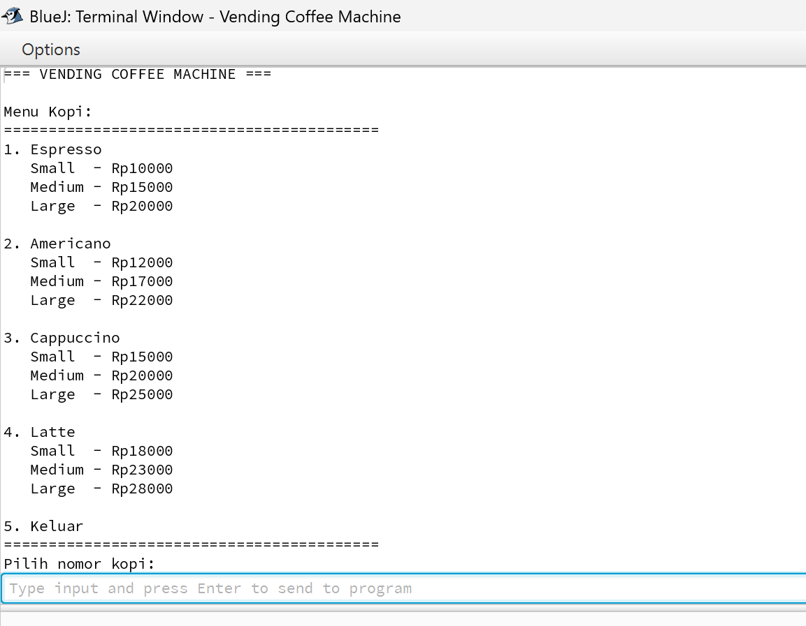
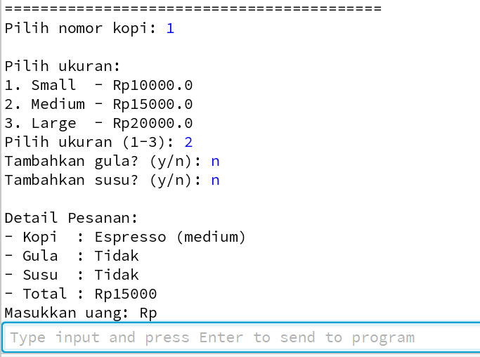
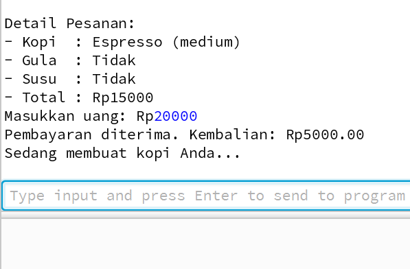
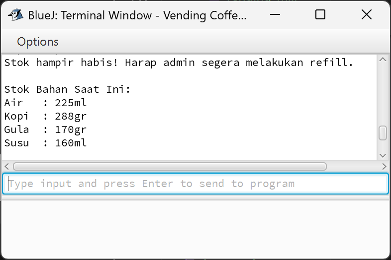
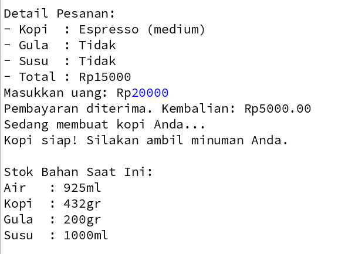
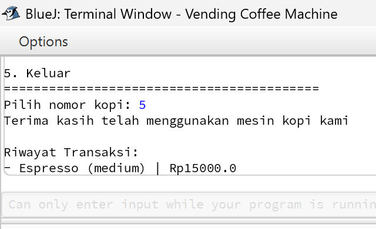

ETS: Implementasi Vending Machine Kopi dengan PBO
Deskripsi Tugas
Pada Evaluasi Tengah Semester mata kuliah Pemrograman Berbasis Objek, saya mempelajari konsep composition, encapsulation, dan modularitas dalam desain sistem yang lebih kompleks menggunakan Java.
Tugas ini mengharuskan saya untuk membuat simulasi Vending Machine Kopi yang interaktif melalui console, terdiri dari lima class utama:
Coffee untuk merepresentasikan jenis kopi dan perhitungan bahan/harga berdasarkan ukuran,
IngredientStock untuk mengelola stok bahan,
PaymentSystem untuk proses pembayaran,
VendingMachine sebagai class utama yang mengintegrasikan semuanya, dan
Main sebagai entry point.
Program ini mendemonstrasikan bagaimana class saling bergantung melalui composition (VendingMachine mengandung instance dari class lain), encapsulation (atribut privat diakses via method), dan interaksi pengguna untuk simulasi transaksi kopi dengan opsi ukuran, tambahan gula/susu, serta pengecekan stok dan pembayaran.
Implementasi Program
Saya mengimplementasikan program Vending Machine Kopi dengan lima class yang saling terkait. Class Coffee menangani detail menu kopi, termasuk harga dan bahan berdasarkan ukuran (small, medium, large).
Class IngredientStock mengelola stok bahan dan memvalidasi ketersediaan.
Class PaymentSystem menangani logika pembayaran sederhana.
Class VendingMachine mengintegrasikan semuanya dalam loop interaktif, termasuk menu tampilan, input pengguna, dan log transaksi.
Class Main memulai program. Program menggunakan Scanner untuk input console, ArrayList untuk menu dan log, serta Thread.sleep untuk simulasi proses pembuatan kopi. Berikut adalah kode lengkap untuk masing-masing class:
Class Coffee
import java.util.*;
public class Coffee {
private String name;
private double basePrice; // harga untuk size small
private int waterNeeded; // untuk size small
private int coffeeNeeded; // untuk size small
private int milkNeeded;
private static final int SIZE_PRICE_DIFFERENCE = 5000;
public Coffee(String name, double basePrice, int waterNeeded, int coffeeNeeded, int milkNeeded) {
this.name = name;
this.basePrice = basePrice;
this.waterNeeded = waterNeeded;
this.coffeeNeeded = coffeeNeeded;
this.milkNeeded = milkNeeded;
}
public String getName() {
return name;
}
public double getPrice(String size) {
switch (size.toLowerCase()) {
case "small":
return basePrice;
case "medium":
return basePrice + SIZE_PRICE_DIFFERENCE;
case "large":
return basePrice + (2 * SIZE_PRICE_DIFFERENCE);
default:
return basePrice;
}
}
public int getWaterNeeded(String size) {
switch (size.toLowerCase()) {
case "small":
return waterNeeded;
case "medium":
return (int)(waterNeeded * 1.5);
case "large":
return waterNeeded * 2;
default:
return waterNeeded;
}
}
public int getCoffeeNeeded(String size) {
switch (size.toLowerCase()) {
case "small":
return coffeeNeeded;
case "medium":
return (int)(coffeeNeeded * 1.5);
case "large":
return coffeeNeeded * 2;
default:
return coffeeNeeded;
}
}
public int getMilkNeeded(String size) {
switch (size.toLowerCase()) {
case "small":
return milkNeeded;
case "medium":
return (int)(milkNeeded * 1.5);
case "large":
return milkNeeded * 2;
default:
return milkNeeded;
}
}
public double getBasePrice() {
return basePrice;
}
public static int getSizePriceDifference() {
return SIZE_PRICE_DIFFERENCE;
}
}
Class IngredientStock
public class IngredientStock {
private int water;
private int coffee;
private int sugar;
private int milk;
public IngredientStock(int water, int coffee, int sugar, int milk) {
this.water = water;
this.coffee = coffee;
this.sugar = sugar;
this.milk = milk;
}
public boolean hasEnough(Coffee coffee, String size, boolean addSugar, boolean addMilk) {
return water >= coffee.getWaterNeeded(size) &&
this.coffee >= coffee.getCoffeeNeeded(size) &&
(!addSugar || sugar >= 5) &&
(!addMilk || milk >= 30);
}
public void useIngredients(Coffee coffee, String size, boolean addSugar, boolean addMilk) {
water -= coffee.getWaterNeeded(size);
this.coffee -= coffee.getCoffeeNeeded(size);
milk -= coffee.getMilkNeeded(size);
if (addSugar) sugar -= 5;
if (addMilk) milk -= 30;
}
public void showStatus() {
System.out.println("\nStok Bahan Saat Ini:");
System.out.println("Air : " + water + "ml");
System.out.println("Kopi : " + coffee + "gr");
System.out.println("Gula : " + sugar + "gr");
System.out.println("Susu : " + milk + "ml");
}
public boolean isLowStock() {
return water < 200 || coffee < 36 || sugar < 20 || milk < 200;
}
}
Class PaymentSystem
public class PaymentSystem {
public boolean processPayment(double price, double paid) {
if (paid < price) {
System.out.println("Pembayaran kurang. Transaksi dibatalkan.");
return false;
} else {
System.out.printf("Pembayaran diterima. Kembalian: Rp%.2f\n", (paid - price));
return true;
}
}
}
Class VendingMachine
import java.util.*;
public class VendingMachine {
private List<Coffee> menu;
private IngredientStock stock;
private PaymentSystem paymentSystem;
private List<String> transactionLog;
public VendingMachine() {
menu = new ArrayList<>();
stock = new IngredientStock(1000, 450, 200, 1000);
paymentSystem = new PaymentSystem();
transactionLog = new ArrayList<>();
// Tambahkan menu kopi
menu.add(new Coffee("Espresso", 10000, 50, 12, 0));
menu.add(new Coffee("Americano", 12000, 100, 12, 0));
menu.add(new Coffee("Cappuccino", 15000, 50, 12, 50));
menu.add(new Coffee("Latte", 18000, 50, 12, 70));
}
public void start() {
Scanner sc = new Scanner(System.in);
System.out.println("=== VENDING COFFEE MACHINE ===");
boolean running = true;
while (running) {
System.out.println("\nMenu Kopi:");
System.out.println("==========================================");
for (int i = 0; i < menu.size(); i++) {
Coffee coffee = menu.get(i);
System.out.printf("%d. %s\n", i + 1, coffee.getName());
System.out.printf(" Small - Rp%.0f\n", coffee.getPrice("small"));
System.out.printf(" Medium - Rp%.0f\n", coffee.getPrice("medium"));
System.out.printf(" Large - Rp%.0f\n", coffee.getPrice("large"));
System.out.println();
}
System.out.println("5. Keluar");
System.out.println("==========================================");
System.out.print("Pilih nomor kopi: ");
int choice = sc.nextInt();
if (choice == 5) {
System.out.println("Terima kasih telah menggunakan mesin kopi kami");
running = false;
continue;
}
if (choice < 1 || choice > menu.size()) {
System.out.println("Pilihan tidak valid!");
continue;
}
Coffee selected = menu.get(choice - 1);
// Pilih ukuran
System.out.println("\nPilih ukuran:");
System.out.println("1. Small - Rp" + selected.getPrice("small"));
System.out.println("2. Medium - Rp" + selected.getPrice("medium"));
System.out.println("3. Large - Rp" + selected.getPrice("large"));
System.out.print("Pilih ukuran (1-3): ");
int sizeChoice = sc.nextInt();
String size;
switch (sizeChoice) {
case 1:
size = "small";
break;
case 2:
size = "medium";
break;
case 3:
size = "large";
break;
default:
System.out.println("Pilihan ukuran tidak valid, menggunakan small.");
size = "small";
break;
}
System.out.print("Tambahkan gula? (y/n): ");
boolean addSugar = sc.next().equalsIgnoreCase("y");
System.out.print("Tambahkan susu? (y/n): ");
boolean addMilk = sc.next().equalsIgnoreCase("y");
double finalPrice = selected.getPrice(size);
if (addSugar) finalPrice += 2000;
if (addMilk) finalPrice += 3000;
System.out.printf("\nDetail Pesanan:");
System.out.printf("\n- Kopi : %s (%s)", selected.getName(), size);
System.out.printf("\n- Gula : %s", addSugar ? "Ya" : "Tidak");
System.out.printf("\n- Susu : %s", addMilk ? "Ya" : "Tidak");
System.out.printf("\n- Total : Rp%.0f\n", finalPrice);
System.out.print("Masukkan uang: Rp");
double paid = sc.nextDouble();
if (!stock.hasEnough(selected, size, addSugar, addMilk)) {
System.out.println("Stok tidak mencukupi. Hubungi admin untuk refill.");
continue;
}
if (paymentSystem.processPayment(finalPrice, paid)) {
stock.useIngredients(selected, size, addSugar, addMilk);
System.out.println("Sedang membuat kopi Anda...");
try {
Thread.sleep(2000); // simulasi proses pembuatan kopi
} catch (InterruptedException e) {
System.out.println("Terjadi kesalahan pada mesin.");
}
System.out.println("Kopi siap! Silakan ambil minuman Anda.");
transactionLog.add(selected.getName() + " (" + size + ") | Rp" + finalPrice);
}
if (stock.isLowStock()) {
System.out.println("Stok hampir habis! Harap admin segera melakukan refill.");
}
stock.showStatus();
}
// Tampilkan log transaksi
System.out.println("\nRiwayat Transaksi:");
for (String log : transactionLog) {
System.out.println("- " + log);
}
}
}
Class Main
public class Main {
public static void main(String[] args) {
VendingMachine vm = new VendingMachine();
vm.start();
}
}
Gambar Implementasi di BlueJ
Berikut adalah beberapa screenshot dari implementasi program di IDE, termasuk eksekusi console, pembuatan objek, dan output transaksi:

Gambar 1: Menu utama program di console
Saat program dijalankan dari Main, VendingMachine.start() menampilkan menu kopi dengan opsi ukuran dan harga. Pengguna memilih nomor kopi (1-4) atau keluar (5).

Gambar 2: Pemilihan ukuran dan tambahan di console
Setelah memilih kopi (misalnya Espresso), program meminta ukuran (1-3), tambahan gula/susu (y/n), dan menghitung harga final termasuk biaya tambahan (Rp2000 untuk gula, Rp3000 untuk susu).

Gambar 3: Input pembayaran dan validasi
Pengguna memasukkan jumlah uang. PaymentSystem.processPayment() memvalidasi jika cukup; jika ya, hitung kembalian. Jika kurang, batalkan transaksi.

Gambar 4: Validasi stok bahan sebelum transaksi
IngredientStock.hasEnough() memeriksa apakah stok air, kopi, gula (5gr jika ditambah), dan susu (30ml jika ditambah) cukup berdasarkan ukuran. Jika tidak, tampilkan pesan error.

Gambar 5: Pengurangan stok setelah pembayaran sukses
Jika pembayaran valid, useIngredients() mengurangi stok sesuai kebutuhan (misalnya, medium: water *1.5, coffee *1.5, milk *1.5). Kemudian simulasi dengan Thread.sleep(2000).

Gambar 6: Peringatan stok rendah dan tampilan status
Setelah transaksi, isLowStock() memeriksa jika stok di bawah threshold (air <200ml, kopi <36gr, gula <20gr, susu <200ml) dan menampilkan peringatan. showStatus() mencetak stok saat ini.

Gambar 7: Proses pembuatan kopi dan konfirmasi siap
Setelah pembayaran sukses dan stok dikurangi, program menampilkan "Sedang membuat kopi Anda..." dengan delay 2 detik menggunakan Thread.sleep(), kemudian "Kopi siap! Silakan ambil minuman Anda." Transaksi ditambahkan ke transactionLog.

Gambar 8: Tampilan riwayat transaksi di akhir program
Saat program berakhir (pilihan 5), start() menampilkan seluruh transactionLog dengan format "Nama Kopi (ukuran) | Harga", merangkum semua transaksi yang berhasil.
Penjelasan Konsep
Program Vending Machine Kopi ini mendemonstrasikan konsep dasar Pemrograman Berbasis Objek seperti composition (class VendingMachine menggabungkan instance dari Coffee, IngredientStock, PaymentSystem, dan List untuk menu/log), encapsulation (semua atribut privat diakses hanya melalui method publik), modularitas (setiap class bertanggung jawab atas fungsi spesifik, seperti stok atau pembayaran), dan interaksi antar-class melalui method calls. Program juga menggunakan konsep static constant untuk perbedaan harga ukuran, ArrayList untuk koleksi dinamis, dan exception handling sederhana untuk thread sleep. Berikut penjelasan garis besar setiap method pada kelima class:
Class Coffee
Class Coffee merepresentasikan satu jenis minuman kopi dalam menu vending machine. Ia mengenkapsulasi atribut seperti nama, harga dasar (untuk small), dan kebutuhan bahan dasar (air, kopi, susu untuk small), serta menangani skalabilitas berdasarkan ukuran (small, medium, large) melalui switch-case yang menyesuaikan harga (+Rp5000 per level) dan bahan (medium: *1.5, large: *2). Constant static SIZE_PRICE_DIFFERENCE memastikan konsistensi harga tambahan. Class ini bersifat immutable setelah dibuat (tidak ada setter), mempromosikan encapsulation ketat, dan digunakan oleh VendingMachine untuk perhitungan dinamis.
- Constructor
Coffee(String name, double basePrice, int waterNeeded, int coffeeNeeded, int milkNeeded)→ Menginisialisasi instance baru dari objek Coffee dengan parameter yang diberikan. Atributnamemenyimpan nama kopi (misalnya "Espresso"),basePriceharga dasar untuk small (misalnya 10000),waterNeededml air dasar (misalnya 50),coffeeNeededgram kopi dasar (misalnya 12), danmilkNeededml susu dasar (misalnya 0 untuk Espresso). ConstantSIZE_PRICE_DIFFERENCE = 5000didefinisikan di level class untuk digunakan di method lain. Constructor ini dipanggil di VendingMachine constructor untuk mengisi menu, memastikan setiap objek Coffee siap digunakan tanpa inisialisasi tambahan. - Method
getName()(publik) → Mengembalikan string nama kopi yang disimpan di atributname. Method sederhana ini memungkinkan akses read-only ke identitas kopi, digunakan di VendingMachine untuk menampilkan menu dan log transaksi, tanpa memodifikasi state internal, sesuai prinsip encapsulation. - Method
getPrice(String size)(publik) → Menghitung dan mengembalikan harga total berdasarkan ukuran yang diberikan (case-insensitive viatoLowerCase()). Untuk "small": kembalikanbasePrice; "medium":basePrice + SIZE_PRICE_DIFFERENCE(Rp5000 tambahan); "large":basePrice + 2 * SIZE_PRICE_DIFFERENCE(Rp10000 tambahan); default:basePrice. Method ini fleksibel untuk perhitungan harga dinamis di VendingMachine, termasuk penambahan biaya gula/susu di luar method ini. - Method
getWaterNeeded(String size)(publik) → Mengembalikan jumlah ml air yang dibutuhkan berdasarkan ukuran. Logika switch mirip getPrice: "small":waterNeeded; "medium":(int)(waterNeeded * 1.5)(pembulatan ke bawah); "large":waterNeeded * 2; default:waterNeeded. Casting ke int memastikan tipe integer konsisten. Method ini dipanggil oleh IngredientStock untuk validasi dan pengurangan stok, mensimulasikan proporsi bahan realistis. - Method
getCoffeeNeeded(String size)(publik) → Serupa dengan getWaterNeeded, tapi untuk gram kopi. "small":coffeeNeeded; "medium":(int)(coffeeNeeded * 1.5); "large":coffeeNeeded * 2; default:coffeeNeeded. Digunakan untuk memastikan stok kopi cukup, dengan perhitungan proporsional yang sama untuk skalabilitas ukuran. - Method
getMilkNeeded(String size)(publik) → Mengembalikan ml susu berdasarkan ukuran, dengan logika identik: "small":milkNeeded; "medium":(int)(milkNeeded * 1.5); "large":milkNeeded * 2; default:milkNeeded. Khusus untuk kopi berbasis susu seperti Cappuccino/Latte; untuk Espresso/Americano (milkNeeded=0), selalu 0. Method ini terpisah untuk modularitas, memungkinkan penyesuaian independen jika diperlukan. - Method
getBasePrice()(publik) → Mengembalikan harga dasarbasePricetanpa modifikasi ukuran. Berguna untuk debugging atau perhitungan internal, meskipun jarang digunakan di program ini, tapi mendukung extensibility jika ada fitur diskon dasar. - Method
getSizePriceDifference()(static, publik) → Mengembalikan constantSIZE_PRICE_DIFFERENCE(5000) tanpa membuat instance. Static karena bersifat global untuk class, memungkinkan akses dari mana saja tanpa objek Coffee, misalnya untuk konfigurasi harga di class lain jika diperluas.
Class IngredientStock
Class IngredientStock mengelola inventori bahan vending machine (air, kopi, gula, susu) dengan encapsulation ketat: atribut privat yang hanya dimodifikasi melalui method spesifik. Ia bertanggung jawab untuk validasi ketersediaan bahan sebelum transaksi, pengurangan stok setelah sukses, tampilan status, dan deteksi stok rendah. Stok awal diinisialisasi di VendingMachine (1000ml air, 450gr kopi, 200gr gula, 1000ml susu), dan method-methodnya berinteraksi dengan Coffee untuk perhitungan berbasis ukuran, termasuk tambahan gula (5gr) dan susu ekstra (30ml jika dipilih).
- Constructor
IngredientStock(int water, int coffee, int sugar, int milk)→ Menginisialisasi stok bahan dengan nilai parameter:waterml air,coffeegr kopi,sugargr gula,milkml susu. Dipanggil sekali di VendingMachine constructor untuk setup awal, memastikan state valid dari awal tanpa setter publik untuk mencegah modifikasi eksternal tidak terkendali. - Method
hasEnough(Coffee coffee, String size, boolean addSugar, boolean addMilk)(publik) → Memvalidasi apakah stok cukup untuk pesanan spesifik. Mengembalikan true jika:water >= coffee.getWaterNeeded(size),coffee >= coffee.getCoffeeNeeded(size),!addSugar || sugar >= 5(gula hanya jika dipilih, minimal 5gr), dan!addMilk || milk >= 30(susu ekstra 30ml jika dipilih, plus milkNeeded dari Coffee). Logika kondisional ini mencegah penggunaan bahan opsional jika tidak diminta, dipanggil di VendingMachine sebelum pembayaran untuk menghindari transaksi gagal parsial. - Method
useIngredients(Coffee coffee, String size, boolean addSugar, boolean addMilk)(publik) → Mengurangi stok setelah validasi sukses. Mengurangi:water -= coffee.getWaterNeeded(size),coffee -= coffee.getCoffeeNeeded(size),milk -= coffee.getMilkNeeded(size)(susu dasar dari Coffee), dan jikaaddSugartrue:sugar -= 5; jikaaddMilktrue:milk -= 30(susu ekstra). Pengurangan langsung pada atribut privat memastikan state stok selalu up-to-date, dipanggil hanya setelah pembayaran berhasil di VendingMachine. - Method
showStatus()(publik) → Mencetak status stok saat ini ke console dengan format tetap: "\nStok Bahan Saat Ini:\nAir : " + water + "ml\nKopi : " + coffee + "gr\nGula : " + sugar + "gr\nSusu : " + milk + "ml". Dipanggil setelah setiap transaksi di VendingMachine untuk memberikan feedback visual kepada pengguna/admin tentang stok tersisa. - Method
isLowStock()(publik) → Mengembalikan true jika stok rendah:water < 200ml,coffee < 36gr (cukup untuk ~3 small),sugar < 20gr (cukup untuk ~4 tambahan), ataumilk < 200ml. Threshold ini arbitrary tapi realistis untuk peringatan dini, dipanggil setelah transaksi di VendingMachine untuk menampilkan pesan "Stok hampir habis!" jika kondisi terpenuhi.
Class PaymentSystem
Class PaymentSystem adalah class sederhana yang menangani logika pembayaran tunai dasar, terpisah untuk modularitas (mudah diganti dengan sistem kartu jika diperluas). Tidak ada atribut instance, hanya satu method statis-like (non-static tapi bisa dibuat static). Ia memvalidasi pembayaran dan menghitung kembalian, mengembalikan boolean untuk menentukan kelanjutan transaksi, serta mencetak pesan feedback.
- Method
processPayment(double price, double paid)(publik) → Memproses pembayaran dengan membandingkanpaid(uang yang dibayarkan) denganprice(harga final termasuk tambahan). Jikapaid < price, cetak "Pembayaran kurang. Transaksi dibatalkan." dan return false (batalkan). Jika cukup, cetak "Pembayaran diterima. Kembalian: Rp%.2f\n" dengan format dua desimal untuk(paid - price), dan return true (lanjutkan). Method ini dipanggil di VendingMachine setelah input uang, memisahkan logika finansial dari core vending untuk encapsulation.
Class VendingMachine
Class VendingMachine adalah class utama (controller) yang mengintegrasikan semua komponen melalui composition: menyimpan Liststart() menjalankan loop interaktif utama menggunakan Scanner untuk input pengguna, menangani pilihan menu, ukuran, tambahan, pembayaran, validasi, simulasi proses, dan logging. Program berakhir saat pilihan 5, menampilkan riwayat. Ini mendemonstrasikan orchestration antar-class dan user interaction di console.
- Constructor
VendingMachine()→ Menginisialisasi komponen inti:menu = new ArrayList<>()untuk daftar kopi;stock = new IngredientStock(1000, 450, 200, 1000)untuk stok awal;paymentSystem = new PaymentSystem();transactionLog = new ArrayList<>()untuk riwayat. Kemudian tambahkan 4 objek Coffee ke menu: Espresso (10000, 50ml air, 12gr kopi, 0 susu), Americano (12000, 100ml, 12gr, 0), Cappuccino (15000, 50ml, 12gr, 50ml), Latte (18000, 50ml, 12gr, 70ml). Ini setup lengkap vending machine siap digunakan, dipanggil dari Main. - Method
start()(publik) → Method utama yang menjalankan simulasi vending machine. MembuatScanner sc = new Scanner(System.in)untuk input. Cetak header "=== VENDING COFFEE MACHINE ===". Loop whilerunning = true: tampilkan menu dengan loop for i=0 to menu.size()-1, cetak nomor, nama, dan harga untuk small/medium/large menggunakancoffee.getPrice()dengan printf untuk format Rp%.0f (tanpa desimal). Opsi 5 untuk keluar. Bacachoice = sc.nextInt(). Jika 5: cetak pesan terima kasih, set running=false. Jika invalid (1-4): cetak error, continue. Ambilselected = menu.get(choice-1). Kemudian pilih ukuran: tampilkan opsi 1-3 dengan harga, bacasizeChoice, setsizevia switch (default small). Baca tambahan:addSugar = sc.next().equalsIgnoreCase("y"), sama untukaddMilk. HitungfinalPrice = selected.getPrice(size), tambah 2000 jika addSugar, 3000 jika addMilk. Tampilkan detail pesanan dengan printf. Bacapaid = sc.nextDouble(). Cek!stock.hasEnough(selected, size, addSugar, addMilk): error stok, continue. JikapaymentSystem.processPayment(finalPrice, paid)true: panggilstock.useIngredients(), cetak "Sedang membuat...",Thread.sleep(2000)untuk simulasi (catch InterruptedException dengan pesan error), cetak "Kopi siap!", tambah ketransactionLog.add(selected.getName() + " (" + size + ") | Rp" + finalPrice)(catat tanpa tambahan gula/susu di log). Cekstock.isLowStock(): peringatan jika true. Selalu panggilstock.showStatus(). Setelah loop, tampilkan "Riwayat Transaksi:" dan loop for cetak setiap log dengan "- ". Method ini adalah inti interaksi, menggabungkan semua class untuk alur lengkap: pilih → konfig → bayar → validasi → proses → log.
Class Main
Class Main adalah entry point sederhana program, mengikuti konvensi Java untuk aplikasi console. Ia membuat instance VendingMachine dan memulai simulasi, memastikan eksekusi thread-safe tanpa kompleksitas tambahan.
- Method
main(String[] args)(static, publik) → Method utama Java yang dijalankan saat program dieksekusi. MembuatVendingMachine vm = new VendingMachine()untuk inisialisasi, kemudian panggilvm.start()untuk memulai loop interaktif. Args tidak digunakan, tapi bisa digunakan untuk konfigurasi masa depan seperti stok awal via args. Ini memisahkan inisialisasi dari logika utama, memungkinkan testing VendingMachine secara terpisah jika diperlukan.
Class Main
Class Main adalah entry point sederhana program, mengikuti konvensi Java untuk aplikasi console. Ia membuat instance VendingMachine dan memulai simulasi, memastikan eksekusi thread-safe tanpa kompleksitas tambahan.
- Method
main(String[] args)(static, publik) → Method utama Java yang dijalankan saat program dieksekusi. MembuatVendingMachine vm = new VendingMachine()untuk inisialisasi, kemudian panggilvm.start()untuk memulai loop interaktif. Args tidak digunakan, tapi bisa digunakan untuk konfigurasi masa depan seperti stok awal via args. Ini memisahkan inisialisasi dari logika utama, memungkinkan testing VendingMachine secara terpisah jika diperlukan.
Kesimpulan
Evaluasi ini memperkuat pemahaman tentang composition dan encapsulation dalam PBO melalui desain modular Vending Machine Kopi. Class VendingMachine mengintegrasikan komponen seperti Coffee untuk menu dinamis, IngredientStock untuk manajemen inventori, dan PaymentSystem untuk transaksi, sementara interaksi console mensimulasikan alur real-world dengan validasi stok, pembayaran, dan logging. Implementasi ini menunjukkan bagaimana object saling berinteraksi untuk membentuk sistem lengkap, termasuk penggunaan ArrayList untuk koleksi dan Thread untuk simulasi waktu. Konsep ini menjadi dasar untuk proyek PBO lebih kompleks seperti inheritance, polymorphism, atau integrasi database di tugas selanjutnya.